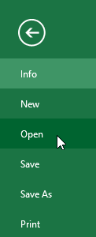
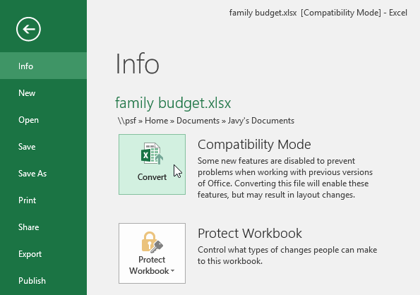

Antarmuka Excel
Saat Anda membuka Excel 2016 untuk pertama kalinya, Layar Mulai Excel akan muncul. Dari sini, Anda dapat membuat buku kerja baru, memilih template, dan mengakses buku kerja yang baru saja diedit.
Dari Layar Mulai Excel, cari dan pilih Buku kerja kosong untuk mengakses antarmuka Excel.
Klik tombol di bawah untuk mengenal antarmuka Excel.

Bekerja dengan lingkungan Excel
The Ribbon dan Quick Access Toolbar adalah di mana Anda akan menemukan perintah untuk melakukan tugas umum di Excel. Tampilan Backstage memberi Anda berbagai opsi untuk menyimpan, membuka file, mencetak, dan membagikan dokumen Anda.
Ribbon
Excel 2016 menggunakan sistem Ribbon tab alih-alih menu tradisional. Ribbon berisi beberapa tab, masing-masing dengan beberapa kelompok perintah. Anda akan menggunakan tab ini untuk melakukan tugas paling umum di Excel.
Setiap tab akan memiliki satu atau lebih grup.

Beberapa grup akan memiliki panah yang dapat Anda klik untuk opsi lainnya.

Klik tab untuk melihat perintah lainnya.

Anda dapat menyesuaikan bagaimana Ribbon ditampilkan dengan Ribbon Display Options.
Program tertentu, seperti Adobe Acrobat Reader, dapat memasang tab tambahan ke Ribbon. Tab ini disebut add-in.
Untuk mengubah Opsi Tampilan Ribbon:
Ribbon dirancang untuk merespons tugas Anda saat ini, tetapi Anda dapat memilih untuk meminimalkannya jika ternyata memakan terlalu banyak ruang layar. Klik panah Ribbon Display Options di sudut kanan atas Ribbon untuk menampilkan menu drop-down.
Ada tiga mode dalam menu Opsi Tampilan Ribbon:
-
Sembunyikan Otomatis Ribbon: Sembunyikan otomatis menampilkan buku kerja Anda dalam mode layar penuh dan sepenuhnya menyembunyikan Ribbon. Untuk menampilkan Ribbon, klik perintah Expand Ribbon di bagian atas layar.
-
Tampilkan Tab: Opsi ini menyembunyikan semua grup perintah saat tidak digunakan, tetapi tab akan tetap terlihat. Untuk menampilkan Ribbon, cukup klik tab.
-
Show Tabs and Commands: Opsi ini memaksimalkan Ribbon. Semua tab dan perintah akan terlihat. Opsi ini dipilih secara default saat Anda membuka Excel untuk pertama kalinya.
Quick Access Toolbar (Toolbar Akses Cepat)
Terletak tepat di atas Ribbon, Quick Access Toolbar memungkinkan Anda mengakses perintah umum apa pun tab yang dipilih. Secara default, ini termasuk perintah Save, Undo, dan Repeat. Anda dapat menambahkan perintah lain tergantung pada preferensi
Anda.
Untuk menambahkan perintah ke Toolbar Akses Cepat:
- Klik panah tarik-turun di sebelah kanan Toolbar Akses Cepat.
-
Pilih perintah yang ingin Anda tambahkan dari menu drop-down. Untuk memilih dari lebih banyak perintah, pilih More Commands.
-
Perintah akan ditambahkan ke Quick Access Toolbar.
Bagaimana cara menggunakan Tell me:
Kotak "Tell me..." berfungsi seperti bilah pencarian untuk membantu Anda menemukan alat atau perintah yang ingin Anda gunakan dengan cepat.

-
Ketik dengan kata-kata Anda sendiri apa yang ingin Anda lakukan.
-
Hasilnya akan memberi Anda beberapa opsi yang relevan. Untuk menggunakannya, klik seperti yang Anda lakukan pada perintah pada Ribbon.
Worksheet (Tampilan lembar kerja)
Excel 2016 memiliki berbagai opsi tampilan yang mengubah cara buku kerja Anda ditampilkan. Tampilan ini dapat berguna untuk berbagai tugas, terutama jika Anda berencana untuk mencetak spreadsheet. Untuk mengubah tampilan lembar kerja, temukan
perintah di sudut kanan bawah jendela Excel dan pilih tampilan Normal, tampilan Tata Letak Halaman, atau tampilan Hentian Halaman.
-
Normal view adalah tampilan default untuk semua lembar kerja di Excel.
-
Page Layout view menampilkan bagaimana lembar kerja Anda akan muncul saat dicetak. Anda juga dapat menambahkan header dan footer dalam tampilan ini.
-
Page Break view memungkinkan Anda mengubah lokasi hentian halaman, yang sangat membantu saat mencetak banyak data dari Excel.

Tampilan Backstage
Tampilan Backstage memberi Anda berbagai opsi untuk menyimpan, membuka file, mencetak, dan berbagi buku kerja Anda.
Untuk mengakses tampilan Backstage:
Klik tab File pada Ribbon. Tampilan Backstage akan muncul.

Klik tombol di interaktif di bawah ini untuk mempelajari lebih lanjut tentang menggunakan tampilan Backstage.
#2: Menyimpan dan membuka file
Saat Anda masuk ke akun Microsoft Anda, OneDrive akan muncul sebagai opsi setiap kali Anda menyimpan atau membuka file. Anda masih memiliki pilihan untuk menyimpan file ke komputer Anda. Namun, menyimpan file ke OneDrive memungkinkan Anda mengaksesnya
dari komputer lain, dan juga memungkinkan Anda berbagi file dengan teman dan rekan kerja.
Misalnya, saat Anda mengklik Save As (Simpan Sebagai), Anda dapat memilih OneDrive atau PC ini sebagai lokasi penyimpanan.

#3: Membuat dan Membuka Buku Kerja
File Excel disebut buku kerja. Setiap kali Anda memulai proyek baru di Excel, Anda harus membuat buku kerja baru. Ada beberapa cara untuk mulai bekerja dengan buku kerja di Excel. Anda dapat memilih untuk membuat buku kerja baru — baik dengan
buku kerja kosong atau templat yang sudah didesain sebelumnya — atau membuka buku kerja yang sudah ada.
#4: Untuk membuat buku kerja kosong baru:
-
Pilih tab File. Tampilan belakang panggung akan muncul.

-
Pilih New, lalu klik Blank workbook.
- Blank workbook baru akan muncul.
#5: Untuk membuka buku kerja yang sudah ada:
Selain membuat buku kerja baru, Anda harus sering membuka buku kerja yang telah disimpan sebelumnya. Untuk mempelajari lebih lanjut tentang menyimpan buku kerja, kunjungi pelajaran kami tentang Menyimpan dan Berbagi Buku Kerja.
-
Arahkan ke tampilan Backstage, lalu klik Open.

-
Pilih Komputer, lalu klik Browse. Atau, Anda dapat memilih OneDrive untuk membuka file yang disimpan di OneDrive Anda.
-
Kotak dialog Buka akan muncul. Cari dan pilih buku kerja Anda, lalu klik Buka.
Jika Anda baru saja membuka buku kerja yang diinginkan, Anda bisa menelusuri Buku Kerja Terbaru Anda daripada mencari file.
#6: Untuk menyematkan buku kerja:
Jika Anda sering bekerja dengan buku kerja yang sama, Anda dapat menyematkannya ke tampilan Backstage untuk akses yang lebih cepat.
-
Arahkan ke tampilan Backstage, lalu klik Open. Buku kerja Anda yang baru saja diedit akan muncul.
-
Arahkan mouse ke buku kerja yang ingin Anda sematkan. Sebuah pushpin ikon akan muncul di samping buku kerja. Klik ikon pin tekan.
-
Buku kerja akan tetap berada di Buku Kerja Terbaru. Untuk melepas pin buku kerja, cukup klik ikon pushpin lagi.
#7: Menggunakan template
Sebuah Template adalah spreadsheet pradesain dapat Anda gunakan untuk membuat workbook baru dengan cepat. Templat sering kali menyertakan pemformatan khusus dan rumus yang telah ditentukan sebelumnya, sehingga dapat menghemat banyak waktu dan
tenaga saat memulai proyek baru.
Untuk membuat buku kerja baru dari template:
-
Klik tab File untuk mengakses tampilan Backstage.
- Pilih Baru. Beberapa template akan muncul di bawah opsi Buku kerja kosong.
-
Pilih template untuk meninjaunya.
- Sebuah pratinjau template akan muncul, bersama dengan tambahan informasi tentang bagaimana template dapat digunakan.
-
Klik Buat untuk menggunakan template yang dipilih.
-
Sebuah buku kerja baru akan muncul dengan template yang dipilih.
Anda juga dapat menelusuri template berdasarkan kategori atau menggunakan bilah pencarian untuk menemukan sesuatu yang lebih spesifik.
Penting untuk dicatat bahwa tidak semua template dibuat oleh Microsoft. Banyak yang dibuat oleh penyedia pihak ketiga dan bahkan pengguna individu, sehingga beberapa template mungkin berfungsi lebih baik daripada yang lain.
#8: Mode Kompatibilitas
Terkadang Anda mungkin perlu bekerja dengan buku kerja yang dibuat di versi Microsoft Excel yang lebih lama, seperti Excel 2003 atau Excel 2000. Saat Anda membuka jenis buku kerja ini, mereka akan muncul dalam Mode Kompatibilitas.
Mode Kompatibilitas menonaktifkan fitur tertentu, sehingga Anda hanya dapat mengakses perintah yang ditemukan dalam program yang digunakan untuk membuat buku kerja. Misalnya, jika Anda membuka buku kerja yang dibuat di Excel 2003, Anda hanya bisa
menggunakan tab dan perintah yang ditemukan di Excel 2003.
Pada gambar di bawah, Anda dapat melihat bahwa buku kerja berada dalam Mode Kompatibilitas, yang ditunjukkan di bagian atas jendela di sebelah kanan nama file. Ini akan menonaktifkan beberapa fitur Excel 2016, dan mereka akan berwarna abu-abu
di Pita.
Untuk keluar dari Mode Kompatibilitas, Anda harus mengonversi buku kerja ke tipe versi saat ini. Namun, jika Anda berkolaborasi dengan orang lain yang hanya memiliki akses ke versi Excel yang lebih lama, sebaiknya biarkan buku kerja dalam Mode
Kompatibilitas agar formatnya tidak berubah.
Untuk mengonversi buku kerja:
Jika Anda ingin mengakses semua fitur Excel 2016, Anda bisa mengonversi buku kerja ke format file 2016.
Perhatikan bahwa mengonversi file dapat menyebabkan beberapa perubahan pada tata letak asli buku kerja.
-
Klik tab File untuk mengakses tampilan Backstage.
-
Cari dan pilih perintah Konversi.

-
Kotak dialog Simpan Sebagai akan muncul. Pilih lokasi tempat Anda ingin menyimpan buku kerja, masukkan nama file untuk buku kerja, dan klik Simpan.
- Buku kerja akan dikonversi ke tipe file terbaru.